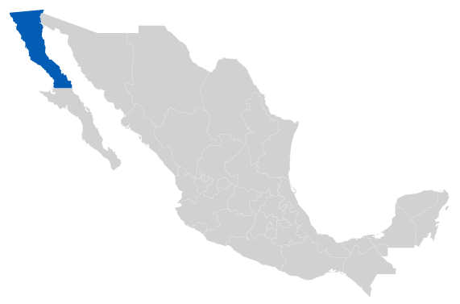

Baja California
|  | |||
|
DISPONIBILIDAD POR ACUÍFERO
|
|||
DMA* / ** : Disponibilidad Media Anual de Agua Subterránea
( Cifras en hectómetros cúbicos anuales [hm3anuales] )
DNC*** : Descarga Natural Comprometida
R**** : Recarga Media Anual
VEAS***** : Volumen de Extracción de Aguas Subterráneas